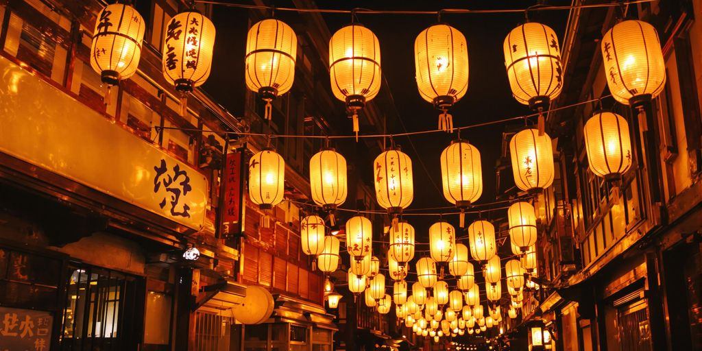
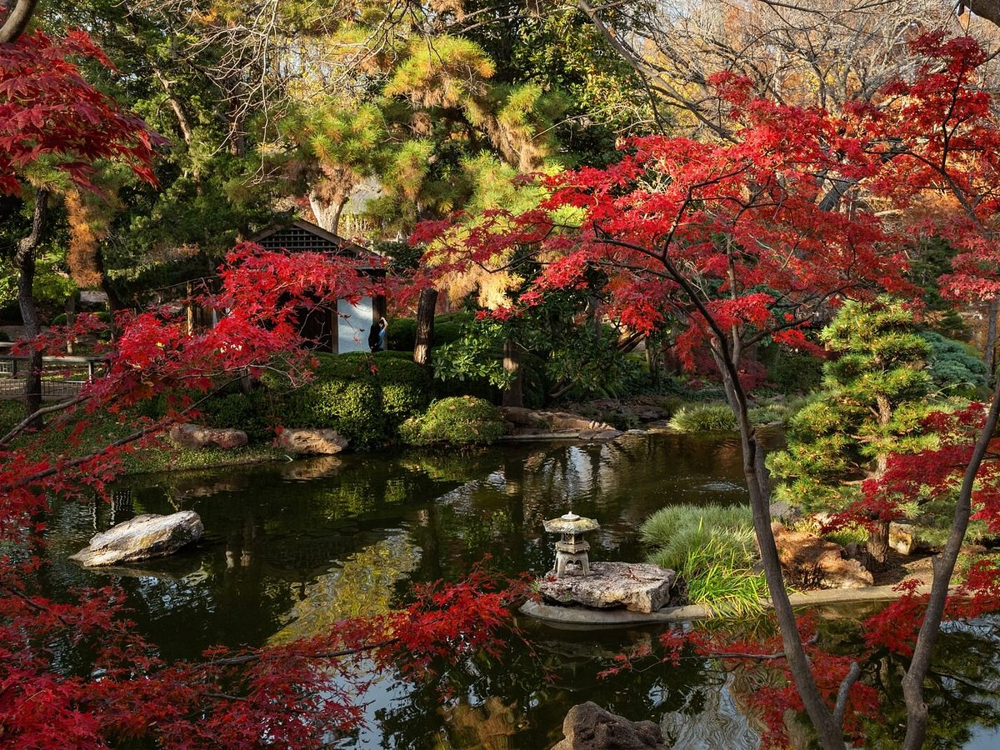

This majestic riverwalk takes you through an enchanting experience of the history which shaped the Empire of Serkan today. Come and journey with us as we trek upon these bridges, which used to serve as a protection front during the perilous war between the previously evil territory of Serkan and the Great Kingdom of Ariunzule (before the both of them became a part of the Empire of Serkan), but now has been reformed as a reminder to honor those which we tragically lost in the war for freedom. Furthermore, these bridges were originally crafted out of the purest crystal, so join us in brilliantly lighting up these Great Bridges brighter and brighter to reflect the goodness in your heart, as you take a step on these bridges. Legends say that if you look upon the sun at sunset from the middle of the Great Bridge between these two Serkan territories, you may catch a glimpse of the deceased Golden Queen of the Sun and her blessed smile of radiance.
Come and join us as we continue the long standing tradition of crafting lanterns, which capture the essence of the sun in a brilliant blend of technology and local Itri magic for our nights. This long standing tradition was introduced as a collaboration between the previous kingdoms of Wrynn and Ariunzule. While both kingdoms may not exist today in their full former glory (due to their unfortunate fall many centuries ago, before the reformation of the Empire of Serkan we know today), this tradition of using the Itri power of harnessing the sun and the high technological inventions of the Unicorns from Wrynn was preserved over the years by our great Emperor, Ichtor Virtuous, himself. Join us as we each do our wonderful part in adding light to the world, even during these dark and long nights.
 